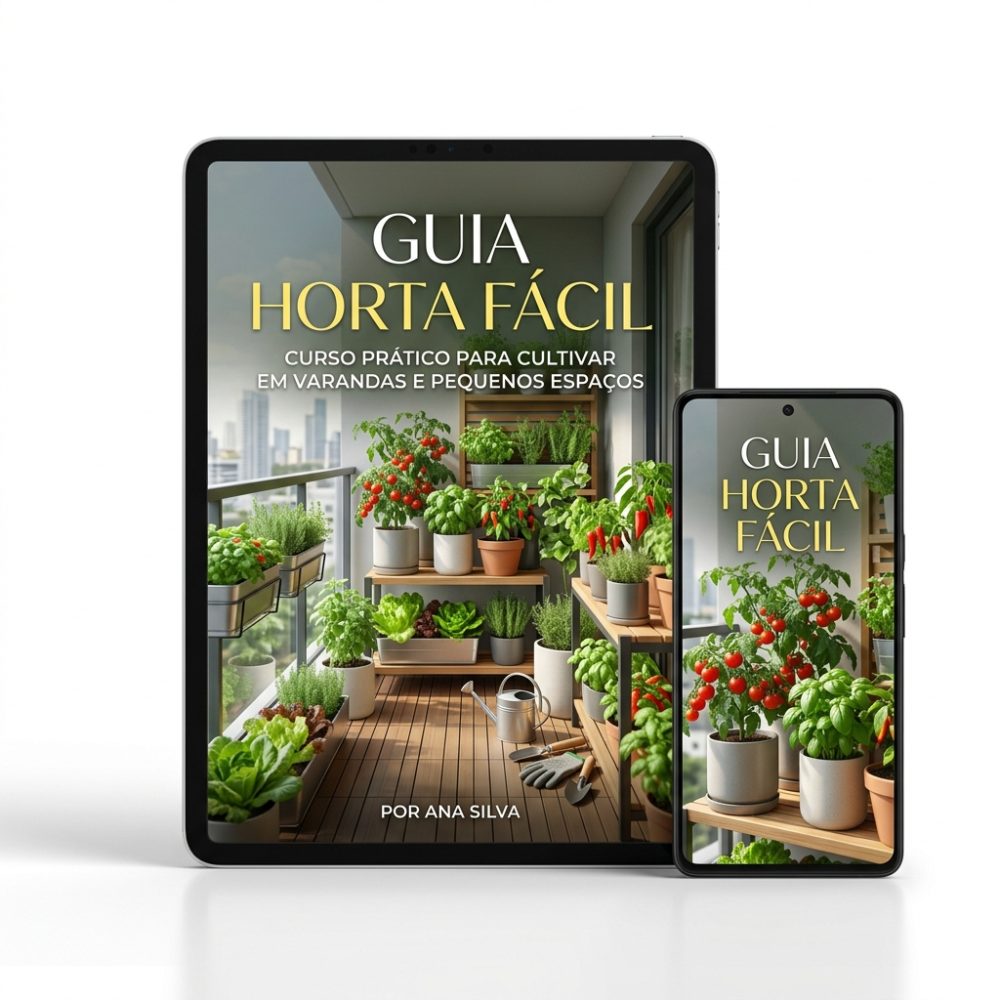

Descubra o método à prova de falhas para ter uma horta viva, orgânica e livre de agrotóxicos na sua janela. Tudo isso sem precisar de "dedo verde" e dedicando apenas 3 minutos por dia.
Compra Segura. Acesso Imediato pelo Celular.

Você compra um maço lindo de manjericão no mercado, usa um pouco num prato, guarda na geladeira e dias depois joga tudo fora porque estragou.
Você mora em um apartamento ou casa sem quintal e acha que é impossível ter qualquer tipo de planta ali.
Já tentou ter um vasinho de hortelã ou pimenta antes, mas a planta secou, pegou bicho ou morreu misteriosamente sem explicação.
A culpa não é sua! Ninguém te ensinou os 3 segredos simples que fazem qualquer planta prosperar num vasinho.
O manual definitivo e direto ao ponto que revela o método passo a passo para montar sua horta no menor espaço possível (literalmente na sua janela).
"Eu já tinha matado 3 vasinhos de manjericão seguidos. Com esse guia, entendi que era só a posição do sol na minha janela e a terra correta. Agora tenho tempero fresco todo almoço!"
"Por 14 reais eu não esperava tando conteúdo mastigado. A dica do vaso de garrafa PET já salvou o espaço mínimo da minha sacada de apartamento."
"Perfeito e direto ao ponto! Além de economizar muito não comprando mais hortelã no mercado, descobri um hobby ultra terapêutico."
"Eu não levo jeito nenhum com tecnologia, mas o material foi super fácil de abrir no celular e as dicas de adubo caseiro são nota 10!"
Um incrível mini-guia com 15 receitas deliciosas e fáceis para você usar exatamente o que colher da sua varanda.
Valor: R$ 27,00 (Hoje: GRÁTIS)Qual a dosagem de canela ou sabão de coco para salvar sua planta sem veneno algum? Está tudo aqui mastigado.
Valor: R$ 19,00 (Hoje: GRÁTIS)Um mapa visual onde você só confere rapidamente a quantidade de sol necessária por planta antes de plantar.
Valor: R$ 14,00 (Hoje: GRÁTIS)Soma do Valor dos Bônus: R$ 60,00. Para você? Absolutamente Zero!
Faça as contas: Um maço de tempero custa hoje cerca de R$ 4,00 a R$ 6,00. Em um mês, você gasta facilmente mais de R$ 40,00 comprando algo que estraga rápido e está cheio de veneno (agrotóxicos).
Preço Normal: R$ 47,00
🔥 OFERTA ENCERRA EM BREVE!
Pagamento Único. Acesso Imediato no Celular ou Computador.
COMPRAR AGORA E GARANTIR MEU ACESSOEsse é um valor menor do que um lanche na padaria da esquina. Troque um lanche por um benefício para a vida toda.
Se você ler o Guia, testar o método e não conseguir fazer pelo menos uma semente brotar, ou mesmo se só não gostar do formato do conteúdo... Eu devolvo 100% do seu R$ 14! Você tem 7 dias inteiros para testar sem medo. Todo o risco é meu!
Não! Vários temperos se dão perfeitamente bem com apenas 2 ou 3 horinhas de sol batendo na janela. No guia mostramos quais plantas escolher para cada tipo de ambiente.
A resposta é um absoluto SIM. O método foca na "verticalização" ou uso de extremidades. Um pequeno vaso de 20cm é suficiente!
O acesso é imediato! Assim que o pagamento (Pix ou Cartão) for aprovado pela plataforma segura, você receberá um e-mail com acesso ao seu conteúdo Premium.